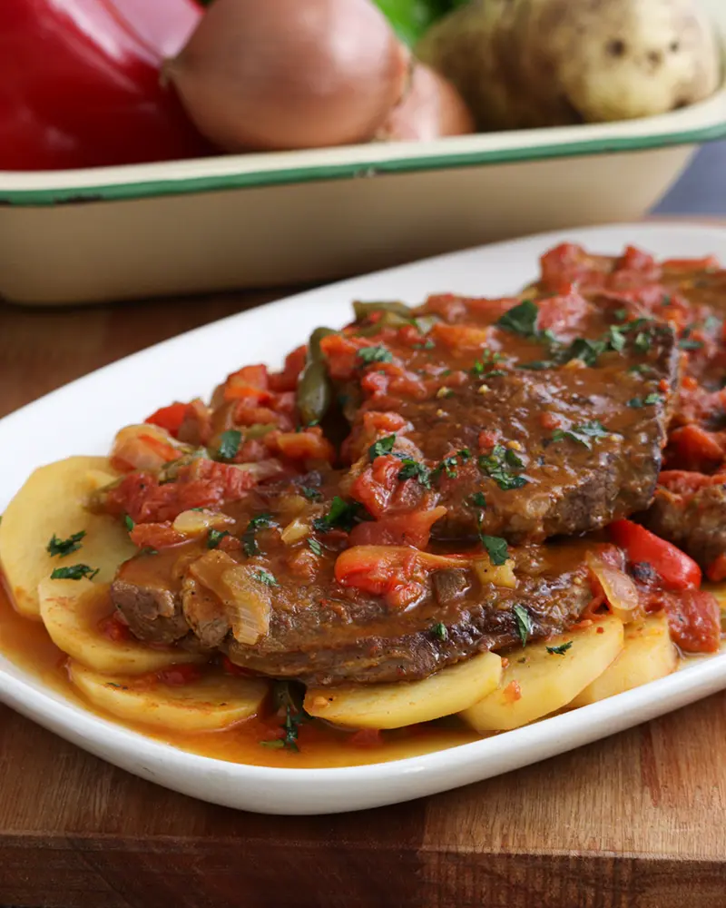

Receta de Bife a la Criolla

Esta receta es un clásico y muy fácil de hacer, ideal si queres ponerle
mas onda al comer bife y no simplemente hacerlo a la plancha con ensalada.
Lista de ingredientes
- 4 bifes de bola de lomo o cuadrada
- 2 Papas
- 1 Zanahoria
- 1 Cebolla
- 1/2 Morrón
- 2 Dientes de ajo
- 2 Tomates
- 1 Lata de arvejas
- 1/2 Taza de pure de tomate
- 1 Taza de caldo
- Sal
- Pimienta
- Aceite
Lista de Pasos
- Cortar la cebolla en juliana, el morron y picar los dientes de ajo
- Cortar la zanahoria y las papas en rodajas (estas últimas de una forma mas gruesa)
- Colocar en la olla con aceite las capas de verdura y la carne
- Agregar encima el puré de tomate y el caldo
- Cuando rompa en hervor revolver mezclando todos los ingredientes
- Tapar y dejar cocinar en fuego medio por durante 40m aproximadamente
- Cuando la papa ya este cocida, agregar la lata de arvejas y cocinar por 5m más
- Apagar el fuego y dejar reposar unos 10m
- Servir
Referencia receta Paulina cocina
Leer receta de Pastel de Papa
Volver al inicio